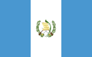
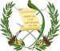
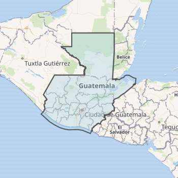

Guatemala
Introducción
Guatemala (del náhuatl: Quauhtlemallan, "lugar de muchos árboles"), oficialmente República de Guatemala, es un estado soberano, libre e independiente situado en el extremo noroccidental de América Central. Políticamente, es una república democrática y representativa organizada para su administración en 22 departamentos. Su cultura latinoamericana es variada; su amplia cultura autóctona es producto de la mezcla de las culturas maya y española durante la época virreinal. Es el país más poblado de Centroamérica, con 16 301 286 de habitantes según el censo realizado en el año 2018. Asimismo, el Área metropolitana de Guatemala cuenta con una población de 5 301 286 habitantes y una extensión territorial de 2253 km², lo que la convierte en el Área metropolitana más extensa y con mayor número de habitantes de América Central. Su capital y ciudad más poblada es la Ciudad de Guatemala, que a su vez es el principal centro económico y financiero del país. La economía de Guatemala es la más grande de Centroamérica.
Historia
Guatemala está situada dentro del área geográfica conocida como Mesoamérica. Dentro de sus límites territoriales se desarrollaron varias culturas. Entre ellas la Civilización Maya que fue notable por lograr un complejo desarrollo social. Sobresalió en varias disciplinas científicas tales como la arquitectura, la escritura, un avanzado cálculo del tiempo por medio de las matemáticas y la astronomía. El calendario maya que según los historiadores, era más preciso que el calendario gregoriano que utilizamos hoy en día. Eran cazadores, agricultores, practicaban la pesca, domesticaban animales como pavos y patos; se trasportaban en canoas para navegar por los ríos y para viajar a las islas cercanas. También destacaron en la pintura, la escultura, la orfebrería y la metalurgia del cobre, tejían el algodón y la fibra de agave, desarrollaron el más completo sistema de escritura en América prehispánica, entre los deportes que practicaban se destaca el juego de pelota, el cual más que un juego era una ceremonia.
Colonia española
El 31 de enero de 1676 por Real Cédula de Carlos II se fundó la Real y Pontificia Universidad de San Carlos Borromeo,29 la tercera universidad fundada en América, donde estudiaron muchas figuras importantes del país, entre ellos Fray Francisco Ximénez, descubridor del manuscrito Popol Vuh —y quien además lo tradujo al castellano adaptándolo a la religión católica30— y el doctor José Felipe Flores, eminente protomédico de Guatemala y médico personal del Rey de España. En el arte del siglo xvii sobresalen el maestro pintor Pedro de Liendo y el maestro escultor Quirio Cataño.
En Santiago de los Caballeros estaría ubicada la capital del Reino de Guatemala, hasta su traslado en 1775 al Valle de la Ermita, actual ubicación de la capital. El rey Felipe II de España y Portugal le otorgó el título de «Muy noble y muy leal Ciudad de Santiago de los Caballeros de Goathemala». Durante la dominación española, que duró casi 300 años, Guatemala fue una región de carácter estratégico (Capitanía General del Reino de Guatemala), formando parte del Virreinato de la Nueva España. La Capitanía General de Guatemala se extendía desde la región de Chiapas (en la actualidad perteneciente a México) hasta la actual Costa Rica. Sus divisiones políticas variarían con frecuencia, lo mismo que las fronteras entre las diversas provincias. A mediados del siglo xvii, el reino en su conjunto tenía treinta y dos provincias, de las cuales doce estaban en el moderno territorio de la República de Guatemala: el valle de Guatemala, donde se encontraba la ciudad de Santiago de los Caballeros de Guatemala, sede de la Real Audiencia; las Alcaldías Mayores de Amatique, Suchitepéquez y Verapaz, los Corregimientos de Acasaguastlán, Atitlán, Chiquimula, Escuintla, Guazacapán, Quetzaltenango, Sololá (Tecpán-Atitlán) y Totonicapán.
A finales del siglo xviii, cuando el reformismo ilustrado de los Borbones implantó el régimen de Intendencias en algunas regiones del Imperio Español, el número de provincias de la Capitanía General de Guatemala se redujo a 15, de las cuales 9 estaban en el actual territorio de Guatemala: las Alcaldías Mayores de Chimaltenango, Escuintla, Sacatepéquez, Sololá, Suchitepéquez, Totonicapán y Verapaz, y los Corregimientos de Chiquimula y Quetzaltenango. Al promulgarse en 1812 la Constitución de Cádiz, el reino de Guatemala desapareció como unidad, y fue sustituido por dos provincias, sin subordinación entre sí: la Provincia de Guatemala, que comprendía el territorio de Chiapas, El Salvador, Guatemala y Honduras, y la Provincia de Nicaragua y Costa Rica. En 1821, durante el Trienio Liberal en España entró de nuevo en vigencia dicha Constitución, segregándose de la Provincia de Guatemala las Provincias de Comayagua (Honduras), Chiapas y El Salvador.
Independencia y Provincias Unidas del Centro de América

En 1820, Atanasio Tzul, ante el interés de su pueblo por acabar con los impuestos eclesiásticos y el tributo, unió fuerzas con Lucas Aguilar y con el Alcalde Mayor de Totonicapán, Narciso Mallol. Juntos lucharon en contra del poder de la colonia española, manejada por el Capitán General del Reino de Guatemala, el Arzobispo de Guatemala Ramón Casaus y Torres, la élite ladina local y los caciques de Totonicapán, quienes tenían privilegios con respecto al resto de la población indígena debido a su apoyo a la conquista europea. Los tributos reales habían sido suprimidos en 1811 por las cortes de Cádiz, pero fueron impuestos de nuevo por el rey Fernando VII. Tzul fue azotado durante nueve días55 y encarcelado más tarde en Quetzaltenango, después de que el movimiento sufriera una represión a manos de alrededor de mil milicianos.56 El 25 de enero de 1821, él y otros dirigentes solicitaron la gracia del indulto, el cual les fue concedido el 1.° de marzo de 1821, después de una manifestación de individuos totonicapenses.
En México, la revolución obtuvo un completo triunfo y a través del Plan de Iguala declaró su independencia total del Imperio español el 24 de febrero de 1821. Esta noticia desconcertó a las autoridades españolas de Guatemala y a la vez sirvió de estímulo a la causa independentista. El 9 de marzo, presionado por los liberales independentistas, el capitán general dejó el puesto para que fuese ocupado por el subinspector del ejército Gabino Gaínza. Gaínza era un hombre de una edad muy avanzada, de carácter débil y voluble. Bajo su mando, Centroamérica experimentó una agitación social de niveles intolerables que obligó a la diputación provincial a solicitar a Gaínza una reunión para discutir el difícil tema de la independencia. El capitán general Gaínza, entonces, atendiendo este llamado, reunió una junta de notables compuesta por el arzobispo, los diputados, los altos cargos militares, los prelados de las órdenes religiosas, y empleados de hacienda. En aquella memorable reunión, presidida por el mismo Gaínza, los criollos presentes manifestaron su opinión con libertad. José Cecilio del Valle tomó la palabra y en un largo discurso, demostró la necesidad y la justicia de la independencia, pero manifestando que, para proclamarla, primero debía oírse el voto de la Provincias.
Tras un breve período de incertidumbre política, el 5 de enero de 1822, las provincias centroamericanas fueron anexadas al Imperio Mexicano, una idea de Agustín de Iturbide para contrarrestar la expansión estadounidense. El Imperio Mexicano quería ser una monarquía que desembocase en una unión de lo que fueron habitantes del Virreinato de Nueva España bajo una bandera única, católica y poderosa. Sin embargo un año más tarde, el imperio se colapsó y militares republicanos instauraron una democracia y un estado mexicano; Guatemala y sus provincias se separaron de él, declarando de nuevo su independencia y pasando a formar las Provincias Unidas del Centro de América en julio de 1823.
Organización territorial
Guatemala está organizada en ocho regiones, veintidós departamentos y trescientos cuarenta municipios:
| Departamento | Municipios | Cabecera |
|---|---|---|
| Petén | 14 | Flores |
| Huehuetenango | 32 | Huehuetenango |
| Quiché | 21 | Santa Cruz del Quiché |
| Alta Verapaz | 17 | Cobán |
| Izabal | 5 | Puerto Barrios |
| San Marcos | 30 | San Marcos |
| Quetzaltenango | 24 | Quetzaltenango |
| Totonicapán | 8 | Totonicapán |
| Sololá | 19 | Sololá |
| Chimaltenango | 16 | Chimaltenango |
| Sacatepéquez | 16 | Antigua Guatemala |
| Guatemala | 17 | Ciudad de Guatemala |
| Baja Verapaz | 8 | Salamá |
| El Progreso | 8 | Guastatoya |
| Jalapa | 7 | Jalapa |
| Zacapa | 11 | Zacapa |
| Chiquimula | 11 | Chiquimula |
| Retalhuleu | 9 | Retalhuleu |
| Suchitepéquez | 21 | Mazatenango |
| Escuintla | 13 | Escuintla |
| Santa Rosa | 14 | Cuilapa |
| Jutiapa | 17 | Jutiapa |
Lugares turísticos de guatemala
Entre los atractivos turísticos de Guatemala está el tener dos costas oceánicas: la del Pacífico y la del Atlántico, lo cual hace que tenga playas con fisonomías distintitas: las del Caribe con arenas blancas y las otras con arenas volcánicas. Esto ya habla de la variedad de un país dibujado por 37 volcanes, con hermosas ciudades coloniales donde se alzan edificaciones barrocas y neoclásicas y la presencia ineludible de la cultura maya.
Asimismo, hay otros rasgos menos conocidos por el turista, por ejemplo, el de la cultura africana que se mezcló con la indígena para dar origen a la etnia garífuna, con una culinaria impresionante.Con la riqueza de paisajes naturales enclavados en montañas y en parejas pocos conocidos; con diversidad de ecosistemas; con reservas de faunas y flora, en Centroamérica, para cada viajero hay diferentes lugares turísticos en Guatemala para sentirse en libertad.
A continuación verás los lugares más hermosos que debes tomar en cuenta en tu viaje a Guatemala:
Antigua Guatemala (Departamento de Sacatepéquez)

A 25 kilómetros de la capital se ubica esta ilustre localidad colonial. Durante su historia fue llamada con varios nombres, el primero fue Santiago de los Caballeros de Guatemala. Con él permaneció durante la colonia, pero hoy sencillamente se le denomina Antigua.
Antigua fue la capital de la capitanía desde 1541 hasta 1776 y durante ese tiempo se construyeron la mayoría de las impresionantes edificaciones, indiscutibles lugares históricos de Guatemala. Entre las que debes visitar están los palacios de los capitanes generales y el del ayuntamiento, el arco de Santa Calina y el convento de la Merced, la antigua catedral. La ciudad fue declarada Patrimonio de la Humanidad por la Unesco en 1979.
Una fecha muy apropiada para conocerla es Semana Santa, cuando disfrutarás de unos de los rituales católicos más impresionantes del mundo, celebrados de manera sincrética con la cultura maya. En los últimos años aumentaron los lugares turísticos de Antigua en Guatemala y hoy está mejor preparada para ofrecer servicios de transporte, hoteles y restaurantes.
Semuc Champey (Departamento de Alta Verapaz)

Semuc Champey es considerada una de las mejores piscinas naturales del mundo y uno de los mejores destinos turísticos de Guatemala. Para llegar allí, puedes partir de Cobán, en el centro de la nación chapina.
La formación de este paisaje fue lenta. Durante milenios cayó un fino polvo de caliza desde las montañas adyacentes y formó de manera natural un puente sobre el río Cahabón. Hoy la corriente fluye debajo de las pozas por una cueva durante un buen trayecto y luego hace su aparición ya casi al final por el salidero.
Las albercas naturales tienen aguas turquesas, con pozas que van desde uno hasta tres metros de profundidad. En relación a los servicios no existe una gran oferta, pero algunas cabañas de hospedajes pensadas con sentido ecológico brindan la oportunidad de comer y hacer tours por el río y sus alrededores. La buena noticia es que también puedes acampar muy cerca de las pozas.
Zona Arqueológica Tikal (Departamento de Petén)

Tikal es uno de los lugares más importantes de Guatemala, una reliquia arquitectónica de la cultura maya. Por algo fue declarado patrimonio de la Unesco en 1979. Se encuentra localizada a 500 kilómetros de la capital del país, en el departamento del Petén, municipio Flores.
El emplazamiento tiene un área de 16 kilómetros y allí se encuentran palacios, templos residencias, plataformas, edificios administrativos y ramplas para celebrar el juego de pelota maya. Se encuentra enclavada en un espeso bosque tropical y a muy poca distancia de otras importantes ciudades prehispánicas como Uaxactún o Yaxha.
En Petén los lugares turísticos abundan, pero Tikal se destaca de todos ellos. Para ser provechosa la visita, es recomendable que asistas con un guía profesional y experto. Ese servicio y otros, como tiendas de artesanía, lo encontrarás en las adyacencias.
Volcán de Pacaya (Departamento de Escuintla)

Los volcanes son frecuentes destinos turísticos en Guatemala. En todo el territorio hay 37 y entre ellos 30 activos. En el municipio de San Vicente de Pacaya, muy cerca de la capital, exactamente a 47 kilómetros, se encuentra este.
Al llegar a las faldas del cerro hay que pagar una entrada muy económica. Luego emprender la travesía en un trayecto que puede hacerse caminando o a lomos de un caballo, por un pago de aproximadamente 25 dólares. Un paso muy modesto si piensas que ascenderás a uno de los atractivos naturales de Guatemala.
En otras épocas se podía llegar hasta el cráter, sin embargo, actualmente el ascenso está restringido debido a la actividad continua del volcán. Como en cualquier recorrido por espacios naturales es recomendable que estés pendiente de la hidratación, de utilizar zapatos cómodos, de protegerte del sol y de llevar repelentes contra los insectos.
Playa Dorada (Departamento de Izabal)

A una distancia aproximada de 225 kilómetros de la capital se ubica uno de los lugares turísticos de Izabal, una de las playas más visitadas por los turistas nacionales y extranjeros. Esto se debe a la belleza de sus costas, a sus arenas plateadas y a sus aguas turquesas y trasparentes.
Además del mar, muy cerca desemboca el lago de Izabal e igualmente los diferentes afluentes de los ríos de la sierra las Minas.
Como muchos sitios turísticos en Guatemala, Playa Dorada está muy bien preparada para la atención del viajero y posee varios y abundante servicios como motos, lanchas y bananas acuáticas. La población residente vive del turismo, sobre todo en la época de Semana Santa. Muchos se encargan de vender cocos y otros productos alimenticios.